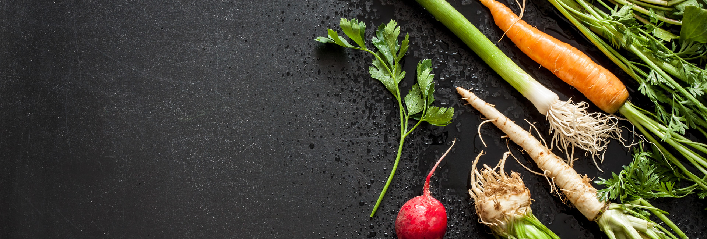

        <div id="jb-container" class="main-padding">
        
      <!-- 1.요리사진 -->
      <div id="jb-header" class="main-padding" style="text-align: center;height: 300px;">
        
      </div>
      
      <!-- 2.요리정보 -->
      <div class="main-padding jb-content">
        <div style="text-align: center">아삭아삭 야채 닭가슴살 잡채</div>
        <div style="text-align: center">요리내용</div>
                <div class="ui-grid-b">
                  <div class="ui-block-a detail-css"><a class="fa fa-user"></a></div>
                  <div class="ui-block-b detail-css"><a class="fa fa-clock-o"></a></div>
                  <div class="ui-block-c detail-css"><a class="fa fa-eye"></a></div>
                  <div class="ui-block-a detail-css"><a>5인분</a></div>
                  <div class="ui-block-b detail-css"><a>30분</a></div>
                  <div class="ui-block-c detail-css"><a>1,312</a></div>
                </div>
      </div>
      
      <!-- 3.재료 -->
      <div class="main-padding jb-content">
        <div>재료</div>
                <div>[재료]</div>
                <div class="ui-grid-a">
                  <div class="ui-block-a" style="border:1px solid black;">당면 300g</div>
                  <div class="ui-block-b" style="border:1px solid black;">양파 1개</div>
                </div>
                <div>[양념]</div>
                <div class="ui-grid-a">
                  <div class="ui-block-a" style="border:1px solid black;">식용유 4스푼</div>
                  <div class="ui-block-b" style="border:1px solid black;">설탕 4스푼</div>
                </div>
      </div>
      
      <!-- 4.조리순서 -->
      <div class="main-padding jb-content">
        <div>조리순서</div>
                <div>1</div>
                <div>
                  <div style="border:1px solid black;">각각의 재료를 준비한다.</div>
                  <div style="border:1px solid black;"></div>
                </div>
                
                <div>2</div>
                <div>
                  <div style="border:1px solid black;">표고버섯은 기둥을 자르고 윗면에 칼집을 내어 모양을 만든다.</div>
                  <div style="border:1px solid black;"></div>
                </div>
      </div>
      
      <!-- 5.tip -->
      <div id="jb-footer" class="main-padding">
        <p>tip</p>
        <div>tip따윈 없다</div>
      </div>
      
    </div>